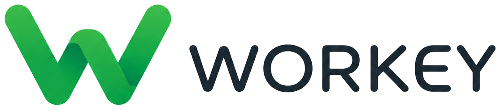

الهوية البصرية — WORKEY
هذه الحزمة مبنية على الشعار المرفق فقط، مع الحفاظ على الأيقونة والـ wordmark دون إعادة تصميم.
المرجع الأعلى للشعار هو الملف الأصلي داخل 00_Source. ألوان الواجهة المرفقة عينات مشتقة من الصورة وليست وصفة لإعادة رسم الشعار.
لوحة الألوان
#29B148
Gradient Start
Gradient Start
#18A949
Gradient Mid
Gradient Mid
#0FA348
Gradient End
Gradient End
#1B2831
Ink
Ink
الخطوط
English UI: Manrope — 400/500/600/700
Arabic UI: Alexandria — 400/500/600/700
هذه الخطوط للمنتج والتسويق فقط. كلمة WORKEY داخل الشعار تبقى من الأصل الجاهز ولا تعاد كتابتها.
الاستخدام الصحيح
- استخدم PNG/SVG-wrapper المرفقين.
- لا تغيّر نسب الشعار أو انحناءاته.
- لا تضف حدوداً أو مؤثرات.
- لا تستخدم الـ design tokens لإعادة رسم الـ W.
- استخدم الأيقونة وحدها في المساحات الصغيرة.
التدرج المرافق للواجهات
linear-gradient(135deg, #29B148 0%, #18A949 52%, #0FA348 100%)
محتويات الحزمة
Logos • App Icons • Favicons • Design Tokens • UI/UX Guidelines • Social Templates • Next.js/Web assets • Mobile assets • Developer snippets.